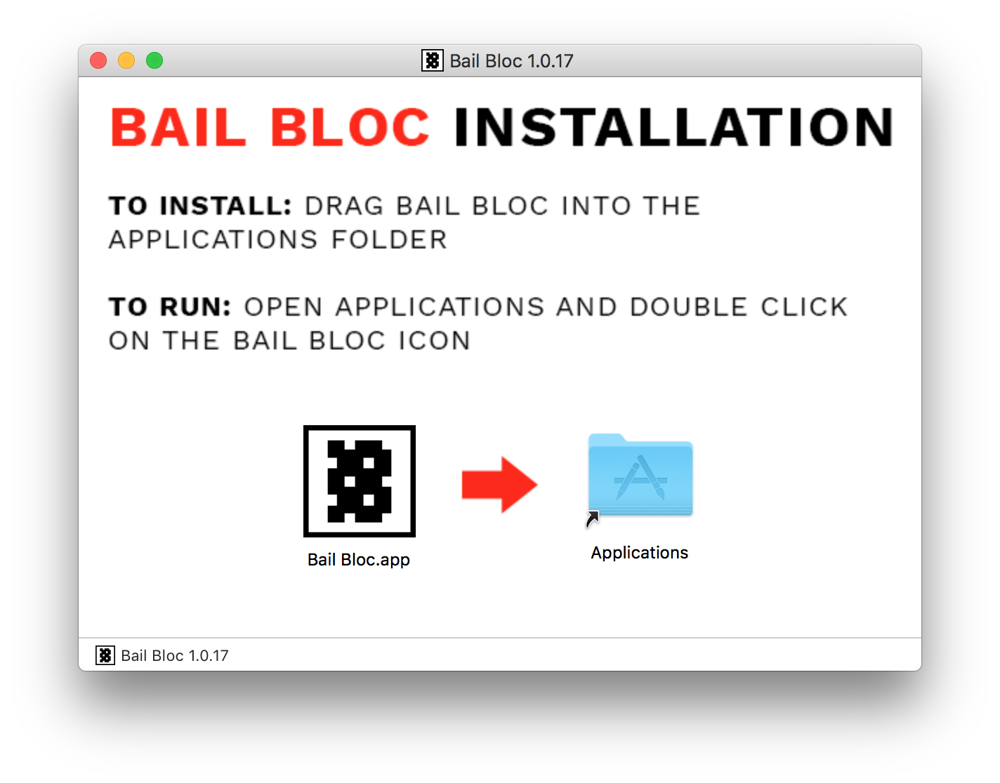
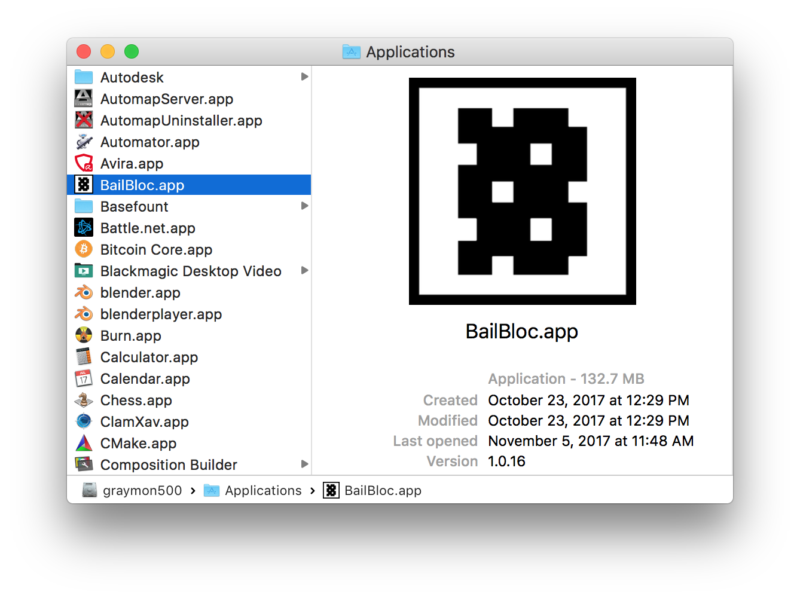
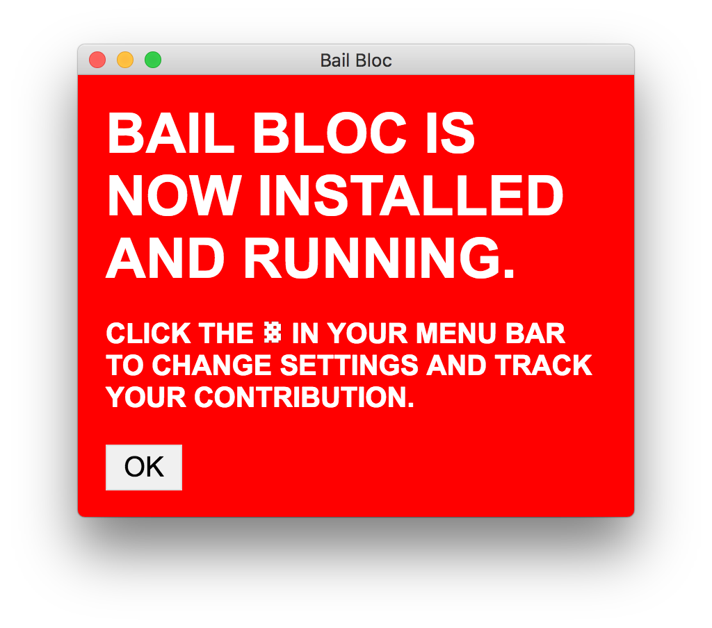
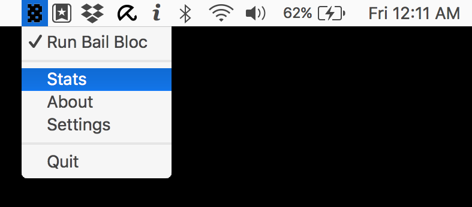
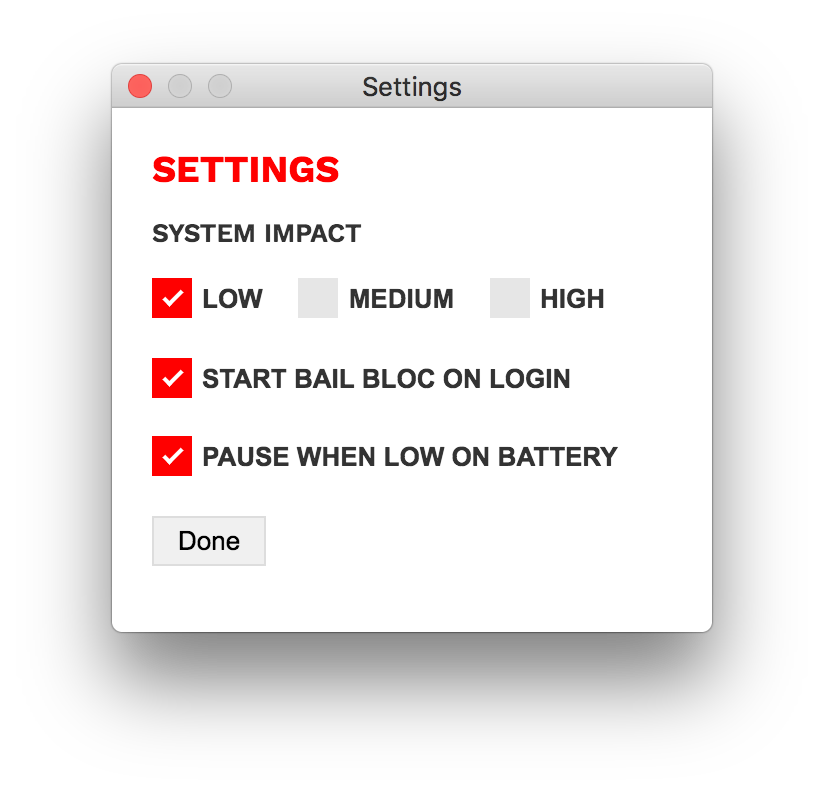
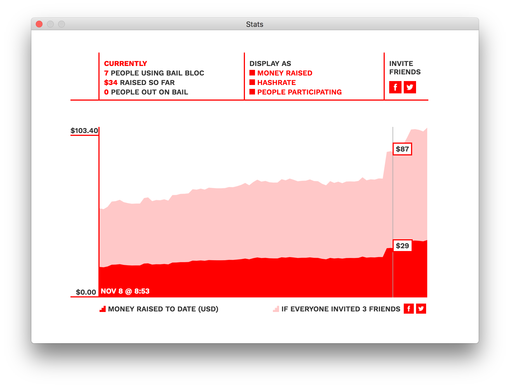

BAIL BLOC is a cryptocurrency scheme against bail
Bail bloc is a crypto-currency scheme against bail
VOLUNTEER YOUR COMPUTER'S SPARE POWER TO GET PEOPLE OUT OF JAIL
Please read our Privacy Policy before downloading. Bail Bloc does not collect any personally identifying information on its users besides your IP address, which is temporarily stored to prevent abuse.
Bail Bloc may be misidentified as malware by your antivirus software. You may need to temporarily disable your antivirus software.
The app is completely safe, private and legal and allows you to keep working as normal.
If you still have concerns or questions, view our open-source code or email us at bailbloc@thenewinquiry.com.
FAQ
Does this cost more to run in electricity than it generates in revenue for bail?
Unlike Bitcoin and other popular crypto coins, which require a great deal of energy to mine, Monero is ASIC-resistant, which means that it requires a comparatively negligible amount of energy, and is therefore cost efficient.
Is there a command-line version of the software available?
There is. Check out our GitHub repository.
How do I uninstall it?
On macOS: Bailbloc is running in your menu bar, at the top of your screen. Find the icon, click it, and hit Quit. Then drag the app from your Applications folder into the Recycling bin.
On Windows: Bailbloc is running in your system tray, at the bottom right of your screen. Find the icon, right click it, and hit Quit. Then go to Add/Remove programs from the start menu as usual.
Install instructions for macOS
Once you download the installation file, double click it and you should see something like this:
Make sure you've placed the app in the Applications folder, then double click it.
Congrats! You're part of the team.
You can monitor your contribution and change settings from the menu bar.
Settings menu:
Stats page:
